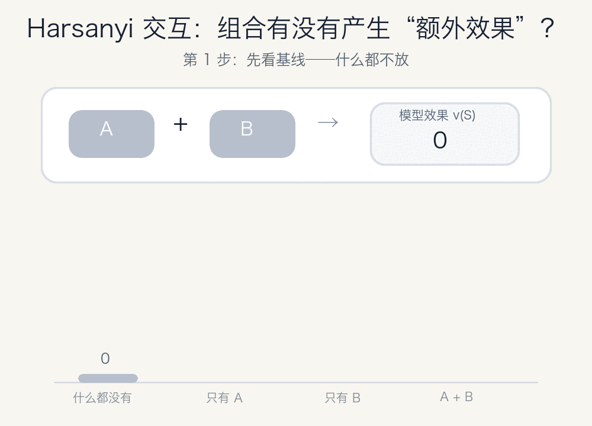

先看一个最简单的例子
假设有两个因素，叫作 A 和 B。我们分别测试什么都不用、只用 A、只用 B，以及同时使用 A 和 B。
| 使用的因素 | 得分 v(S) |
|---|---|
| 什么都不用 | 0 |
| 只用 A | 2 |
| 只用 B | 3 |
| 同时使用 A 和 B | 9 |
如果 A 和 B 互不影响，一起出现应该得到 2 + 3 = 5。但实际得分是 9，比预期多了 4。
这多出来的 4 既不只属于 A，也不只属于 B。它只属于组合 {A, B}。
公式只是在做“总效果减去已有贡献”
I({A, B}) = v({A, B}) − v({A}) − v({B}) + v(∅)
代入例子中的数字：
I({A, B}) = 9 − 2 − 3 + 0 = 4
最后加回空集的基础分，是因为减掉 A 和 B 的单独得分时，基础分被重复减了两次。这与容斥原理是同一个思路。
自己改数字试试看
修改四种情况的得分，交互值会立即更新。
9 − 2 − 3 + 0
I = 4
正交互：A 和 B 在互相增强。
正、负、零分别意味着什么？
I > 0 · 协同
组合效果高于简单相加，两个因素在互相增强。
I < 0 · 干扰
组合效果低于简单相加，两个因素在互相削弱。
I = 0 · 独立
组合效果恰好等于各自效果相加，没有额外影响。
不只有两个因素
有 A、B、C 三个因素时，除了单独贡献和两两交互，还可以计算三者共同产生的三阶交互。
一个组合的 Harsanyi 交互，就是这个组合的总效果中，不能被任何更小组合解释的部分。
对任意集合 S，通用公式是：
I(S) = ΣT⊆S (−1)|S|−|T| v(T)
怎样用它解释语言模型？
可以把 prompt 中的 token 当作玩家，把模型生成目标答案的 log-probability 当作得分 v(S)。
- 枚举 prompt token 的所有子集。
- 保留子集里的 token，其余位置换成 baseline。
- 计算每个子集支持目标答案的程度。
- 用 Möbius transform 得到每个组合的交互值。
高阶交互能够告诉我们：哪些 token 必须一起出现，才会明显提高或降低某个答案的概率。模型利用的可能不是孤立关键词，而是它们共同组成的语义模式。
唯一需要警惕：组合数量增长很快
精确计算需要检查全部子集。玩家数量是 n，子集数量就是 2n。
10 个玩家1,024个子集
15 个玩家32,768个子集
20 个玩家1,048,576个子集
因此解释语言模型时，通常要使用较短的 prompt，或者先把多个 token 合成一个 player group。
最后记住这一句话
Harsanyi 交互不是在问“谁最重要”，而是在问“哪些因素一起出现时，产生了无法单独解释的新效果”。